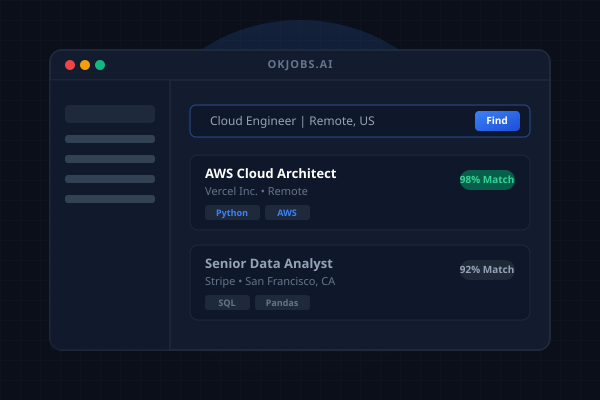
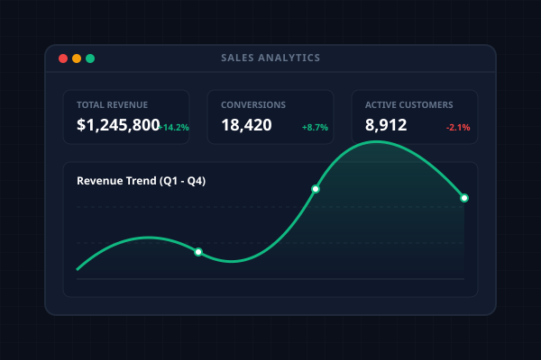
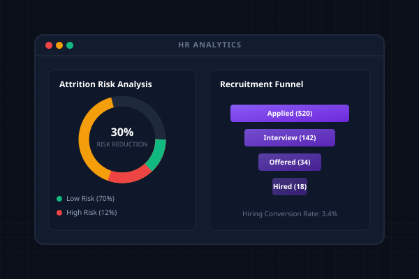
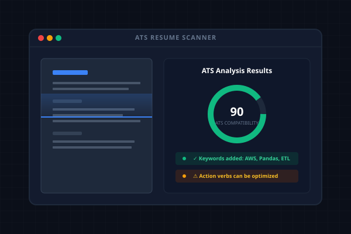
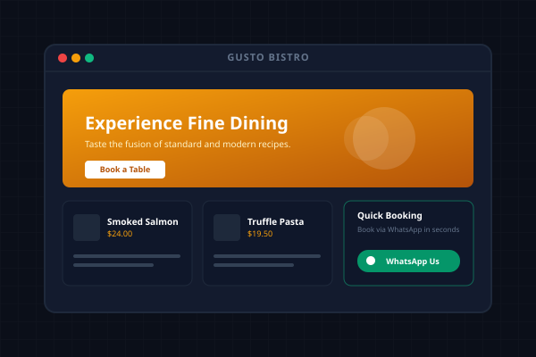
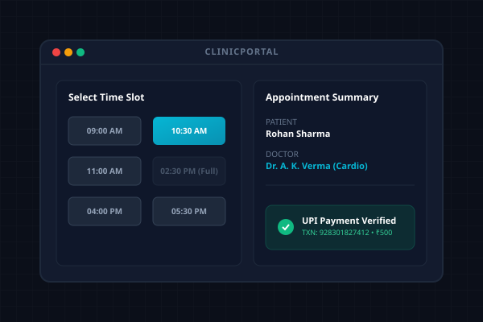
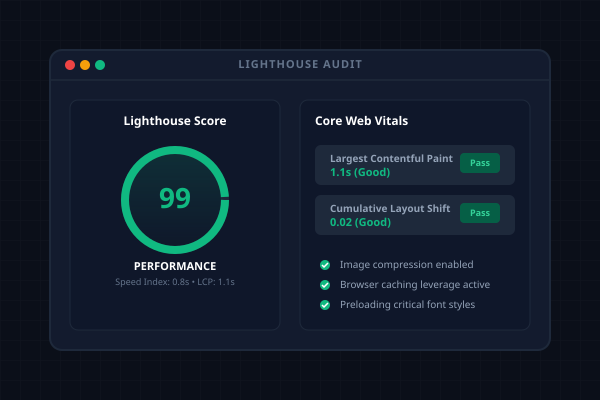

Data Analyst &
Cloud Engineer
Building scalable data solutions with Python, SQL, Power BI & AWS
I transform raw data into actionable insights. Expert in analytics dashboards, ETL pipelines, and cloud infrastructure. B.Tech AI&DS engineer with 7+ production projects.
Ritik Yadav
Data Analyst & Cloud EngineerI engineer robust analytics models and cloud infrastructure to connect raw data with business actions.
I'm a data-driven engineer passionate about solving complex business problems through analytics and automation. What started as curiosity about data has evolved into hands-on expertise in building production dashboards, ETL pipelines, and AI-powered automation solutions.
Relentless about clean code execution, performance constraints, and startup speed. Shipped 7 fully-featured production projects in a 5-month self-study journey covering data fundamentals from spreadsheet calculations to cloud services mapping.
Test your cloud data architecture expertise! Select the correct answer(s):
🎮 Interactive Data Lab
Challenge: Query the database to retrieve Ritik's AWS Intern record.
Keep PySpark server load balanced! Click trigger to process S3 bucket partitions.
Learning Journey & Focus
Excel & Power BI
Mastered data manipulation, formulas, data modeling, time-intelligence, and interactive reporting dashboards.
Python & SQL Querying
Learned core script automations, ETL logic design, window functions, complex joins, and dataset cleanups.
Cloud Architecture (AWS)
Built data lakes using S3, PySpark Glue transformations, Redshift analytics, and Lambda orchestrations.
AI & Automation
Configured API calls, LangChain pipelines, n8n webhook triggers, and autonomous agent tasks.
Current Focus & Career Goals
Education
B.Tech in AI & DS
Grad: 2027Arya College of Engineering and IT
Jaipur, Rajasthan, India
Technical Capabilities
Grouped capability blocks indicating tools, projects utilizing them, and certified expertise levels.
Data Analytics
Master data analysis, visual KPI modeling, and reporting dashboard architectures.
Cloud Engineering
Designing secure serverless ETL pipelines, data warehouses, and lake storages.
SQL & Databases
Advanced relational schema designs, query tuning, joins, and window analytics.
AI & Automation
Integrating Large Language Models and building autonomous workspace flows.
Web & Backend
Developing data products, admin control dashboards, and secure REST APIs.
Performance & SEO
Optimizing page loading, core web vitals, speed audits, and accessibility controls.
Featured Projects
Real-world systems highlighting analytics modeling, cloud infrastructure, and AI engineering.

OKJobs
Problem: Job seekers spend hours filtering irrelevant opportunities with no intelligent recommendation system to guide them.
Solution: Built an AI-powered job search platform with real-time job scraping, ML filtering, and Claude API integration for intelligent matching.

Sales Analytics Dashboard
Problem: Executives relied on static spreadsheets, missing conversion bottlenecks and forecasting trends.
Solution: Created a SQL star-schema and Power BI model tracking revenue trends and conversion segments.

HR Analytics Dashboard
Problem: Human resource divisions could not spot high attrition risks or track recruitment pipeline metrics.
Solution: Engineered analytical models mapping hiring stages and tracking risk parameters dynamically.

AI Resume Analyzer
Problem: Reviewing and tuning resumes against complex Automated Tracking Systems is tedious and slow for graduates.
Solution: Programmed a serverless tool using Claude API and LangChain to calculate scores and map missing keyword sets.

Restaurant Website
Problem: Local restaurant suffered from zero online visibility, dropping traffic to local delivery platforms.
Solution: Built an SEO-optimized landing page with structured menu cards and secure WhatsApp message booking links.

Clinic Booking Portal
Problem: Medical clinic struggled with manual bookings, double-booked slots, and lost reminder updates.
Solution: Shipped a booking portal checking race-condition locks, Stripe UPI status, and SMS alerts.

SEO Audit Dashboard
Problem: Site owners lack unified portals to monitor Core Web Vitals, speed index anomalies, or search index tags continuously.
Solution: Created a reporting console pulling Lighthouse API metrics, analyzing page health, and generating action checklists.
Measurable System Impact
Real metrics reflecting dashboard models, database logic, and deployment quality.
Large-scale datasets cleaned, aggregated, and modeled for analytics platforms.
Writing highly performant query codes, index mappings, and window procedures.
Workspace pipelines and cloud schedulers managed 100% serverless.
Handcrafted production-grade products bridging analytical databases and user UIs.
Ensuring flawless visual stacking from 390px viewports up to 1280px desktops.
Professional Experience
Data Engineer AWS Intern
Graas SolutionsArchitected automated cloud ETL pipelines, data structures, and RDS queries in Jaipur.
- Architected scalable ETL/ELT pipelines using AWS Glue, AWS Lambda, and S3 to process over 500K daily records into clean relational schemas.
- Optimized SQL query performance and RDS database schema indexes, reducing query latency by 40% and pipeline runtimes.
- Constructed secure cloud data ingestion systems and automated workflow orchestrations using Lambda and AWS CloudWatch events.
Freelance Web & Automation Developer
Independent / Self-EmployedBuilding high-performance sites, automated business workflows, and SEO audits for local businesses.
- Engineered custom web applications and landing pages for local business clients, optimizing responsiveness, loading performance, and accessibility.
- Conducted comprehensive local SEO audits, schema optimizations, and performance tuning; achieved rank increases and speed scores of 95+.
- Designed and deployed serverless data synchronization and messaging automations (n8n, APIs) connecting contact forms directly to instant client platforms.
Frontend Development Intern
Groot SoftwareBuilt automation pipelines and recruitment-optimizing tools using full-stack web and workflow orchestration systems in Jaipur.
- Architected an AI-driven career automation platform that aggregates internships and entry-level opportunities from LinkedIn, Internshala, Wellfound, and startup career portals through realtime scraping and workflow orchestration.
- Engineered an ATS-optimized resume intelligence system capable of analyzing job descriptions, extracting recruiter-targeted keywords, and generating tailored resumes dynamically for high-volume applications.
- Built automated recruiter engagement workflows including email tracking, smart follow-ups, interview reminders, and synchronized Google Sheets/Docs pipelines for centralized application management.
- Integrated Next.js, Supabase, Firecrawl, Gmail API, Resend, and n8n to create scalable end-to-end automation infrastructure with realtime cloud synchronization and workflow execution.
Interactive Resume
Read my credentials directly on the page or download the print-ready ATS layout.
Ritik Yadav
Data Analyst & Cloud Engineer
📍 Jaipur, 302039, Rajasthan, IndiaData Analyst specializing in business intelligence and SQL analytics. Proficient in Excel, Power BI, Python, and statistical analysis to transform datasets into actionable insights. Create automated dashboards, track KPIs, and communicate analytics to stakeholders. Proven ability to improve reporting efficiency by 50%.
Work Experience
- Architected scalable cloud ETL pipelines using AWS Glue, Lambda, and S3 to process 500K+ daily records.
- Optimized SQL query performance and RDS schema indexes, reducing query latency by 40%.
- Constructed secure cloud data ingestion streams and automated pipeline triggers via CloudWatch.
Projects
- Engineered 5 operational dashboards visualizing 12+ KPIs. Conducted exploratory data analysis on 500K+ records.
- Designed reusable SQL queries and documentation. Result: 60% reduction in reporting time.
- Built ETL pipelines processing multi-source data; implemented real-time data listeners.
- Integrated Claude API for data processing, Resend notifications, and Google Sheets sync.
Education
Arya College of Engineering and IT
(RTU Affiliated), Jaipur
Technical Skills
Databases & SQL: SQL (Window Functions, Joins, Tuning), Amazon RDS, MySQL, Supabase, Schema Design
ETL & Coding: Python, Pandas, NumPy, Data Cleaning, Pipeline Design, Quality Assurance
Cloud Systems: AWS Glue, Lambda, S3, RDS, CloudWatch, Data Infrastructure
Core Coursework: Machine Learning, DBMS, DSA, OOPs, Operating Systems, Networks
Certifications
• Frontend Graduate, Groot Software (2025)
• Automation Proficiency, Cursor, Lovable, Claude, ChatGPT for Data Pipeline Development
Let's Work Together
I'm open to Data Analyst, Business Analyst, and Junior Data Engineer roles. Interested in collaborating on data products or cloud automation solutions? Reach out!